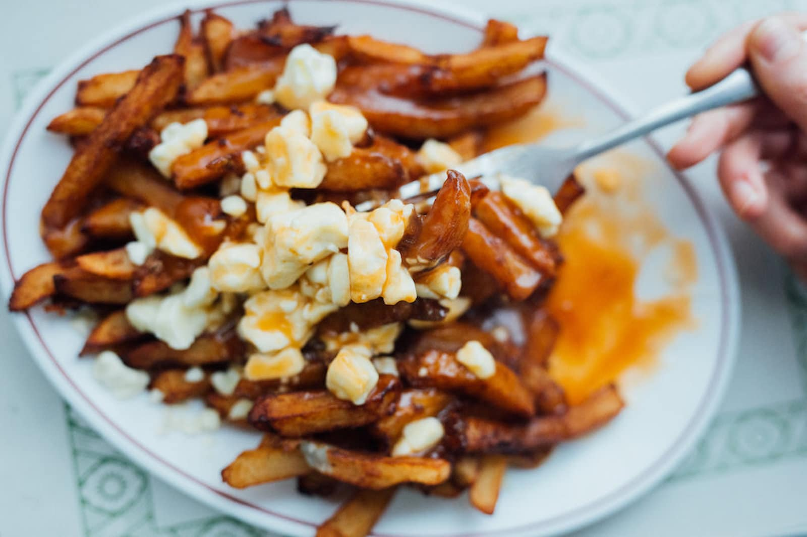

Poutine Maison

Cheese, Fries and Gravy: Poutine
With its soft cheese curds or crispy fries, the Poutine will make his eater really happy.
Ingredients
- 1 bag of Cheese curds
- Fresh fries, or over baked fries
- Gravy (can from St-Hubert)
- Salt to taste
Steps
- Put the fries in a dish. Add salt to taste
- Add about 1/3 to 1/2 of the sauce on the fries.
- Add the cheese curds.
- Add the remaining of the sauce.
- Enjoy !